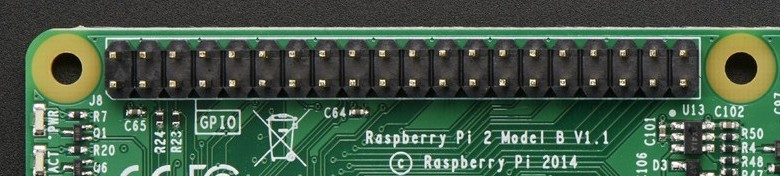
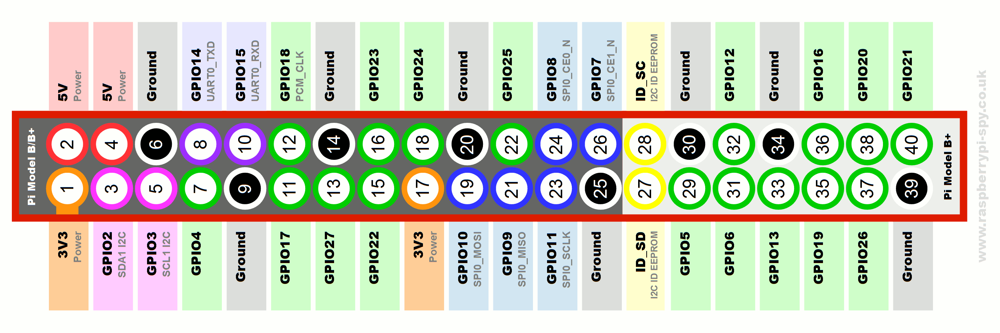
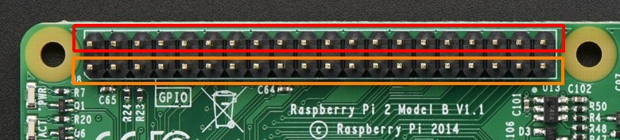

www.thinkerers.org
presents
Raspberry Pi

Command Line CHALLENGE
- What command do you use to create an empty file? (there are two answers!)
- Make a directory, change to it, and then make a file in it. Then change one level up and run the
rmdircommand in this directory. You should get an error. Why did you get this error?
Command Line CHALLENGE
- What's your computer's name?
- How do you find out your computer's IP address?
Command Line CHALLENGE
- If you have no idea what to type at the command line, what can you do?
- What does the
mancommand do? When would you use it?
Command Line CHALLENGE
- Create a file inside
/optand then move it to your home directory - Create two text files and put some text inside each. Save and exit to the command line. How would you display the contents of BOTH files using one single command?
CHALLENGE COMPLETE!
Some history
- Model A (April 2012)
- Model B (Oct 2012)
- Compute Model (April 2014)
- Model B+ (July 2014)
- Model A+ (Nov 2014)
- Version 2 Model B (Feb 2015)
What's not in the box?
- Display monitor (duh!)
- Keyboard & mouse (obviously...)
- Power supply (via Micro USB port)
- Storage (microSD card)
Connecting to the Pi
Standalone
Raspberry Pi + Monitor + Keyboard + Mouse
Headless
Raspberry Pi + Network + Your Laptop
Networking with the Pi
- Built-in Ethernet for wired connections
- Wireless also supported when attached to a compatible WiFi dongle
- We will connect to the Pi through a network using SSH
SSH
- also called Secure Shell
- allows remote login to a networked computer
- uses encryption to secure data communications
- involves an SSH server (the Raspberry Pi)
and an SSH client (your laptop)
SSH Clients
- Linux and Mac OS X have a built-in command:
ssh - Windows users can install
PuTTY
tip: PuTTY GUI client is also available for Linux
Configure laptop
- Set your Ethernet adapter:
IP Address: 10.1.1.1 Subnet mask: 255.255.255.0 Default gateway: 10.1.1.1 - Windows7 users:
- open Network & Sharing Centre -> change adapter settings- right-click Ethernet adapter -> Properties- double-click TCP/IPv4
Connecting via SSH
- Each Pi has been assigned a fixed IP address
- For Linux and Mac OS X, type:
ssh pi@10.1.1.10 - For Windows, run
PuTTYHostname =10.1.1.10, Port =22Click 'Open'
Basic CLI & Python
CLI Commands
ls- list directory contentspwd- show current directorycd- change directorymkdir- make directorymv- move/rename filesrm- remove files/directories (careful!)sudo- super user privileges
Python
- is a programming language
- you create a file (called a Python script) that contains a set of instructions
- these instructions tell the computer what to do, like read input from the keyboard or print some text to the screen
- you then pass the script to the Python interpreter which will execute those instructions
Hello Python
Lets write a simple Python script to read input from the keyboard and then print it to the screen
Hello Python
1. Create a new directory
mkdir ~/python-intro2. Change to that new directory
cd ~/python-intro3. Create a Python script
nano hello.pySimple Python Program
4. Type in the following
name = raw_input("Hi, what is your name? ")
print("Hello %s, have fun hacking today!" % name)
Simple Python Program
5. Save the file by pressing Ctrl+X
6. When asked to confirm, press Y, then hit ENTER
7. Run the Python script by typing:
python hello.pyModifying a Python Program
To edit your Python script, run the following again
nano hello.pyTry adding another question and response
GPIO and Circuits
What is GPIO
- General-purpose input/output
- generic pins on an integrated circuit
- each pin can be configured as input or output
- input/output values can be high (1) or low (0)
- exposed as a 20x2 row of pins
GPIO on the Pi
The GPIO pins are exposed on the 20x2 pin header of the Pi
{kind=link}
GPIO Pinout
Pinout on the Pi
Note how some of the pins have a specific function
{kind=link}
Voltage Supply Rails
The Pi supplies 2 voltage levels: 5V and 3.3V
What voltage level to use depends on the component
Voltage Supply Rails
- 2 x 5-volt pins (red)
- 2 x 3.3-volt pins (orange)
- 8 x ground pins (grey)
Warning
The GPIO pins on the Pi are NOT 5V tolerant
Never connect a 5V pin directly to any other pin
as this can permanently damage the Pi
Remember
Always ensure the Pi is turned off before making any changes to your circuit
Turning the Pi Off
1. Run this command
sudo halt2. Wait for the lights to stop flashing
or
Disconnect the USB power cable / switch off the power socket
GPIO Pin Breakout

Download
all the code we will be using from
http://bit.ly/1A3lWd4We will transfer the code to the Pi using a network share
Network share
- log on to your Pi
- from your laptop, open:
//10.1.1.10/pisharemv ~/share/* ~/thinkerersControlling an LED with GPIO
Controlling an LED with GPIO
Get the script
~/thinkerers/05-led-gpio.pyAnd run it
sudo python 05-led-gpio.pysudo is required when using GPIO
LED Patterns

LED Patterns
Get the script
~/thinkerers/05-led-patterns.pyAnd run it
sudo python 05-led-patterns.pyReading Input
Reading a Switch
Get the script
~/thinkerers/06-switch-input.pyAnd run it
sudo python 06-switch-input.pyPress the switch and watch the output on the screen
To quit the program, press Ctrl+X
Reading a Switch
To Control LED Pattern
Get the script
~/thinkerers/06-switch-led.pyAnd run it
sudo python 06-switch-led.pyPress the switch and watch the LED patterns change
Sensory Madness
(inputs)
Reading Light
Reading Light
Get the script
~/thinkerers/07-reading-light.pyAnd run it
sudo python 07-reading-light.pyMove your hand over the LDR and watch the reading change
To quit the program, press Ctrl+X
Reading Temperature
Some modules need to be enabled
Run this
sudo modprobe w1-gpio
sudo modprobe w1-therm
Note: this isn't permanent
Reading Temperature
Get the script
~/thinkerers/08-reading-temp.pyAnd run it
sudo python 08-reading-temp.pyTouch the temperature sensor and watch the reading change
To quit the program, press Ctrl+X
? Magic Ruler ?

Sonar Sensor
Get the script
~/thinkerers/08-sonar-sensor.pyHold the sensor steady and point it at a nearby flat surface
Then execute the script
sudo python 08-sonar-sensor.pyMotor-ing
(outputs)

Controlling a DC Motor
Script to use:
~/thinkerers/09-dc-motor.pyAnd run it
sudo python 09-dc-motor.pyCaution
Take care removing the L293D
Slowly wedge it out by gripping the sides
Try not to bend the sharp pins
Controlling a Servo Motor
- The Pi isn't actually good for servo control
- Only one hardware PWM pin - GPIO18
- Linux OS interrupts the pulse generated
- Both software and hardware solutions available
tip: check out ServoBlaster

Controlling a Servo Motor
Script to use:
~/thinkerers/09-servo-motor.pyExecute the script
sudo python 09-servo-motor.pyEnter angle between 0 and 180 degrees
Automation
Input + Output = AUTOMATION
Try to combine what you just learnt
Can you control the DC motor based on light?
Example: bright = move forwards
dim = move backwards
Controlling a Motor
Based on Light
Open the *untested* script
~/thinkerers/10-light-dc-motor.pyFix it! Then
sudo python 10-light-dc-motor.pySlowly cover / uncover the LDR and see if you can reverse the motor's direction
Remote Monitoring and Control
Run a Simple File Server
Create a directory
mkdir ~/websiteChange to that directory
cd ~/websiteCreate a test file, enter some text, and save it
nano test.txtRun this
sudo python -m SimpleHTTPServer 80Run a Simple File Server
Enter your Pi's IP address into your browser's address bar:
http://10.1.1.XXX/Can you see the test file you created?
Basic Web Server
Get the script
~/thinkerers/11-basic-server.pyAnd run it
sudo python 11-basic-server.pyIn your browser, go to
http://10.1.1.XXX/any-text-you-likeWeb Server + Sensor
Load temperature sensor modules
sudo modprobe w1-gpio
sudo modprobe w1-therm
Check if module detected the sensor
cd /sys/bus/w1/devicesA file with the name "28xxxxxxxx" should exist
Get the script
~/thinkerers/11-sensor-server.pyAnd run it
sudo python 11-sensor-server.pyAccess your Pi's IP address in your browser
After the Workshop
Changing The Pi's IP Address
Edit the configuration file
sudo nano /etc/network/interfacesModify these lines to match your local network
address 10.1.1.XXX
gateway 10.1.1.1
For example:
address 192.168.0.XXX
gateway 192.168.0.1
Changing The Wireless Network
Edit the configuration file
sudo nano /etc/wpa_supplicant/wpa_supplicant.confModify the ssid and psk values to match your local network
For example:
ssid="MyWirelessSSID"
psk="MySecretPassword"
Recommended resources
Too many to choose!
The End
Thanks for coming!
mind doing a short survey?
This work by Adrian Lai is licensed under a
Creative Commons Attribution-ShareAlike 4.0 International License
Python code samples provided are free of known copyright restrictions
The Raspberry Pi and the Raspberry Pi Logo
are trademarks of the Raspberry Pi Foundation
All other registered trademarks are property of their respective owners